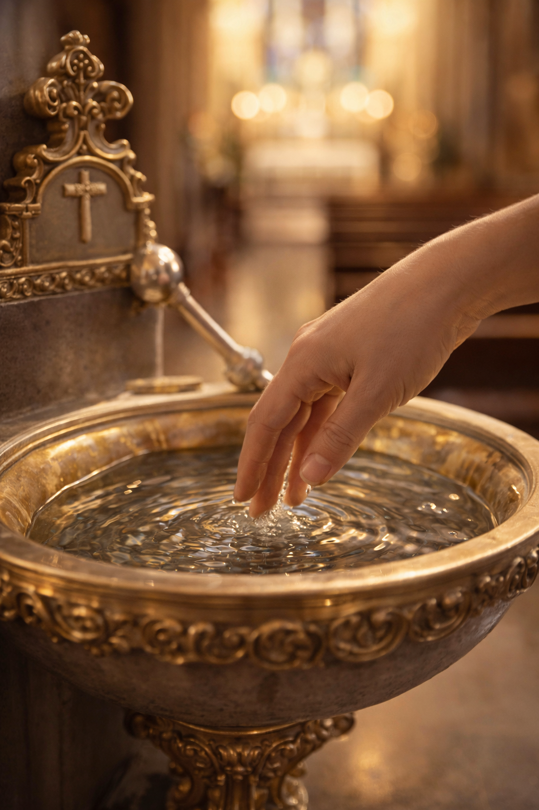

O Significado da Água Benta: Proteção, Purificação e Fé
A água benta é um dos sacramentais mais utilizados na Igreja Católica. Presente nas pias à entrada das igrejas, nas bênçãos de casas e objetos, e no rito do Batismo, ela possui um significado espiritual profundo que vai muito além de um simples gesto simbólico. A água benta é um sinal da nossa purificação, um lembrete do nosso Batismo e uma arma espiritual contra as forças do mal. Usá-la com fé é atrair a bênção de Deus sobre nós e sobre tudo o que nos rodeia.
O que é um Sacramental?
Para entender a água benta, precisamos saber o que é um sacramental. Diferente dos Sacramentos (que foram instituídos por Cristo e conferem a graça por si mesmos), os sacramentais são instituídos pela Igreja para preparar os fiéis para receber a graça e santificar as diversas circunstâncias da vida. A eficácia de um sacramental como a água benta depende muito da fé e da devoção de quem o utiliza.
"Pela aspersão da água benta, o Senhor nos purifique e nos conceda a Sua paz." (Oração litúrgica)
Os Efeitos Espirituais da Água Benta
A Igreja ensina que o uso piedoso da água benta produz diversos frutos na alma:
- Remissão dos Pecados Veniais: Quando usada com arrependimento, a água benta ajuda a apagar as pequenas faltas cotidianas.
- Proteção contra o Mal: A água benta é um poderoso auxílio contra as tentações e as ciladas do demônio. Santa Teresa d'Ávila dizia que nada faz fugir os demônios tão rapidamente quanto a água benta.
- Saúde do Corpo e da Alma: Muitas orações de bênção da água pedem a Deus que ela afaste as doenças e traga vigor aos fiéis.
- Renovação do Batismo: Ao fazermos o sinal da cruz com água benta, recordamos que fomos lavados e consagrados a Deus no dia do nosso batismo.
Como Usar a Água Benta no Dia a Dia?
Você pode e deve usar a água benta em sua casa e em sua vida pessoal:
- Ao Entrar e Sair da Igreja: Faça o sinal da cruz com a água benta para se preparar para a oração ou para levar a bênção para o mundo.
- Em Casa: Tenha um pequeno recipiente com água benta. Use-a para abençoar seus filhos antes de dormirem, para abençoar a si mesmo em momentos de tentação ou medo.
- Bênção de Objetos: Peça a um sacerdote para benzer objetos de devoção (terços, medalhas, crucifixos) usando a água benta.
Água Benta não é Superstição
É importante lembrar que a água benta não tem "poderes mágicos". O poder vem de Deus, através da oração da Igreja que foi proferida sobre aquela água. Usá-la como um amuleto da sorte é cair na superstição. O uso correto é sempre acompanhado de oração, fé e o desejo sincero de viver em amizade com Deus.
Conclusão: Um Sinal da Misericórdia de Deus
A água benta é um presente da Igreja para nos ajudar em nossa caminhada rumo ao céu. Ela nos recorda que Deus quer santificar toda a nossa realidade, até as coisas mais simples como a água. Que cada gota de água benta que toca sua fronte seja um lembrete do amor de Deus que purifica, protege e renova. Use este sacramental com frequência e confiança.
Senhor, que esta água benta seja para nós sinal de salvação e vida nova.